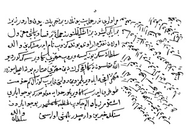

Belge 22
Bu önemli belgenin üst kısmı kopuktur. Belgenin kalan kısmının tam metni:
“... Muradları nedir, helbet (elbette) bunlara bir tahrîk eden vardır, zirâ bir iki kişiden biz işkilleşürüz. Cümleten bir fesâd başı ma’zûl olan tefterdâr (defterdâr) onda bunda gezüb nâm idermiş ki ben Vâlide Sultan’a sekiz yüz kîse verüb möhrü bana verseniz gerekdir, deyü; Allâh saklasun ne bana akça gerek, ne ben möhrü satarım, bu nasıl sözdür möhr akça ile verilmez; dîn ü devleti kayırıb güzel kim hidmet doğru ederse ana verilür, Hudâ’ya ma’lûmdur ki bu cevâbları işitdim, ziyâde elem çeküb gazaba gelmişimdir, bu cevâblardan senin haberin var mıdır, bilmiş olasın. Tefterdârı arayub bulub ele getirdürdiniz mi, helbet mukayyed olub ele getürüb muhâsebesini görüb şer’-i şerîfe havâle idüp bu yana [haber] idesiz, böyle fesâd başları bunda durmanın hakkı yokdur. Zîrâ el-altında[n] tahrîk idüb .... olmazlar, dahi bir iki ...... niçün [yırtık]
Vâlide Sultan”
Yorum:
Kösem Sultan, IV. Murad dönemi belgelerinde de elbette sözcüğünü helbet diye yazar: Bu belgede de aynen helbet şeklinde buluyoruz. Belge altında Vâlide Sultan imzası kuşkusuz Kösem’e aittir.
Bu belge 1649 olaylarına ait son derece önemli bir belgedir. Yazık ki, başı ve sonu, belki kasden, koparılmıştır.
Olay çağdaş kaynaklardan Şârihülmenârzâde’de açıklanmıştır.
Bir fesâddan söz ediliyor, Kösem bunu tahrik edenin azledilmiş olan defterdâr olduğunu sanıyor, kendisinin etrafta dolaşıp “ben Vâlide Sultana” sekiz yüz kîse (80 milyon) akça (rüşvet) verdim, bana pâdişahın mührünü verip veziriâzam yapsın, dermiş. Kösem bu iddiayı şiddetle reddeder, bundan anlaşılıyor ki küçük pâdişahtan saltanat mührünü vâlide sultan alıp istediğini iktidara getirebilmektedir. Vâlide bunu da şiddetle reddeder: “Ne bana akça gerek, ne ben möhrü satarım, bu nasıl sözdür, möhr akça ile verilmez, dîn ü devleti kayırıp güzel kim hidmet doğru ederse ana verilür” diyor. Bu devirde bütçe açığını kapatmak için atamalarda para alınıyor, bunun için bir barem bile tespit edilmiştir. Ama veziriâzamlık bundan ayrı tutulmakta. Kösem dedikodulardan çok kızmış görünüyor, “elem çeküb gazaba gelmişimdir” diyor.

Belge 22: TKSA E.2457/31
Tüm bu dedikodulardan senin haberin var mıdır, diye veziriâzama (?) soruyor. Sonra derkenarda defterdârın yakalanmasını, bu işi önemle araştırmalarını, özellikle hesaplarının incelenmesini istiyor (“bu yana edisiz”) “el altında” gizli “fesâd tahrîk” etmek cezasız kalmamalı (belgenin sonu yırtılıp alınmış).
Bu defterdâr kimdir, o zamanki vekâyinüvislerden ararsak şu sonuca varmak mümkündür:
Kösem Sultan’ın bu mektubunda söz konusu kimse Yedikule’de haps ve idam olunan Musa Paşa’dır. Musa, vaktiyle yeniçeri ağası sonra defterdâr olmuştu. Naîmâ’nın kaynağına göre54 Vekâyinâme yazar ki, Musa Paşa, ocak ağalarından Kösem’in adamı veziriâzam Kara Murad Paşa’nın yerine geçmek için şeyhülislâm ve “bazı yerlere varub” faaliyet gösteriyordu. Ulemânın Kösem’le arası açıktı. Belgemizde Kösem bunu belirtir: (“onda bunda gezüb nâm idermiş ki.”) Kösem’i kötülemek için vâlide sultana büyük rüşvet verdiğini de ilâve ediyormuş. Vekâyinâmeye göre “Enderun cânibine emvâl ve hedâyâ ‘arz” ettiğini iddia edermiş. Bu yalan ve iftira imiş. Özetle, Musa Paşa bu faaliyetiyle ulemânın desteği ve yeniçeri cuntası ile Kösem’in iktidarını devirmek istiyordu. Musa Paşa’nın yakalanıp Yedikule zindanına hapsi ve katli tarihi 1059 Receb (Temmuz 1649) başlarındadır.
Kösem’e ait Topkapı Sarayı Arşivi belgesinin tarihi bundan biraz önce olmalı. Veziriâzam Kara Murad Paşa, Musa’nın katli için pâdişaha (yani Kösem Sultan’a) bir telhîs gönderip hatt-i hümâyûn alıp Musa Paşa’yı idam etti.
Öte yandan Sadrazam Murad Paşa “mehd-i ‘ulyâ vâlide sultan hazretleriyle söyleşür”, Şeyhülislâm Abdürrahim Efendi’nin azline karar verdi, yerine veziriâzamın dostu Behâyî Efendi getirildi (18 Temmuz 1649). Abdürrahim’in azli ocak ağalarının kararıyla olmadığından toplanıp bunu bir “cür’et” (hakkı olmayan bir karar) diye kötülediler. Abdürrahim ve azledilen oğlu Mekke’ye sürgün edildi.55Özetle, bu önemli belge, Kösem’in 1649’da iktidarının en yüksek noktasına eriştiği bir zamanda şeyhülislâm ile bir paşanın komplosunu yansıtmaktadır. Kösem çocuk pâdişahtan saltanat mührünü alıp istediğine verme imkânına sahipmiş.